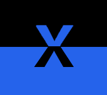

Cultura, Filosofía y Tecnología para tus Proyectos
Profesional con más de dos décadas de experiencia en el MNAC, fusionando humanidades y el mundo digital para crear narrativas auténticas e insights valiosos como Xesco Tejedor.